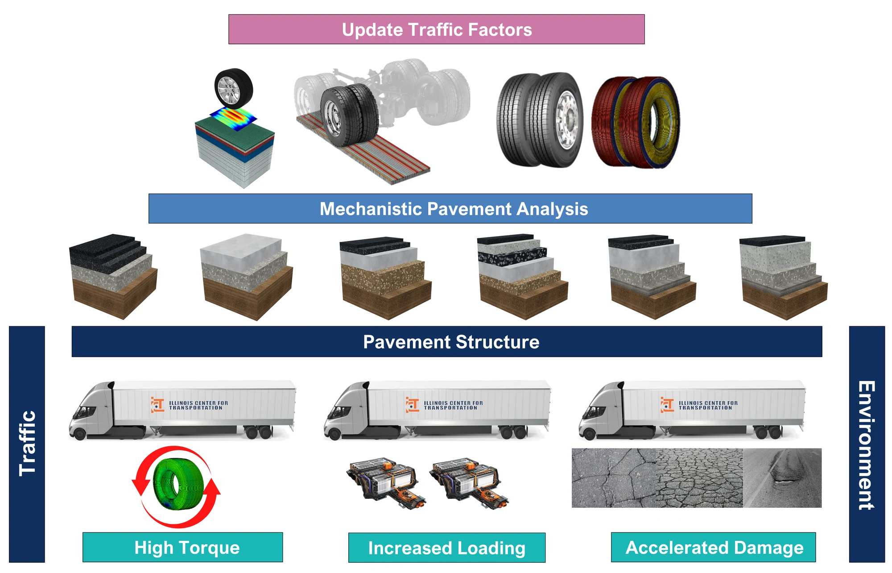

ICT R27-277: Update of Traffic Factor Equations for IDOT Mechanistic-Empirical Pavement Design
Principal Investigator: Imad L. Al-Qadi
IDOT Technical Contact: Charles Wienrank
ICT R27-277 is being conducted in cooperation with the Illinois Center for Transportation (ICT), the Illinois Department of Transportation (IDOT), and the U.S. Department of Transportation, Federal Highway Administration (FHWA). The project was announced in February 2025 and is scheduled to conclude in June 2027. The announcement can be accessed here.
This study builds directly on ICT R27-252, which quantified the effect of heavy-duty electric trucks on flexible pavement performance and recommended adjusting the traffic factor used in IDOT's mechanistic design procedure.
- Project Number: ICT R27-277
- Sponsor: Illinois Department of Transportation, through the Illinois Center for Transportation
- Completion: June 2027
- Status: Active
Project Description
Transportation agencies must adapt pavement design procedures to meet changes in traffic and advances in new technologies such as electric vehicles and trucks, which are expected to accelerate pavement damage due to increased weight from batteries.
Researchers will update the equations used by IDOT pavement designers to convert mixed-traffic axle loadings into traffic factors for asphalt and concrete pavements while accounting for current traffic conditions and axle configurations. Traffic factor represents the total number of 18-kip equivalent single-axle loads, expressed in millions, that a given pavement may be expected to carry. They will also incorporate the impact of e-trucks and platoons — a group or convoy of closely spaced vehicles — on pavement design.
Updating the traffic factor equations to meet current and future demands will allow the agency to properly design pavements to carry the anticipated loadings.
Research Team
- Principal Investigator: Imad L. Al-Qadi
- Post-Doctoral Researcher: Hong Lang
- Graduate Students:
- Aditya Singh
- William Villamil
- Johann J. Cardenas
Approach
The traffic factor collapses an entire mixed-traffic stream into a single design input, so its accuracy depends on assumptions about axle configurations, tire–pavement contact, and the damage each passage causes. The project revisits those assumptions from the bottom up: contemporary tire and axle configurations are characterized, the resulting contact stresses are propagated through mechanistic analyses of representative Illinois asphalt and concrete structures, and the damage they produce is re-aggregated into updated traffic factor equations (see Figure 1). Electric trucks and platooning enter the same chain as changes in load magnitude, torque, and lateral wander rather than as separate corrections applied after the fact.

Objectives
- Update the equations that convert mixed-traffic axle loadings into traffic factors for asphalt and concrete pavements.
- Account for current traffic conditions and contemporary axle configurations.
- Incorporate the impact of electric trucks, whose battery weight increases axle loads and whose electric drivetrains deliver higher torque.
- Incorporate the impact of truck platoons, where closely spaced vehicles concentrate load repetitions in the wheel path.
Potential Implementation
The updated equations are intended to be adopted directly into IDOT's mechanistic-empirical pavement design procedure. With traffic factors that reflect the vehicles actually using Illinois roads — and the vehicles expected to use them over the design period — the agency can size pavement structures to the loadings they will carry, avoiding both premature distress from under-design and unnecessary cost from over-design.